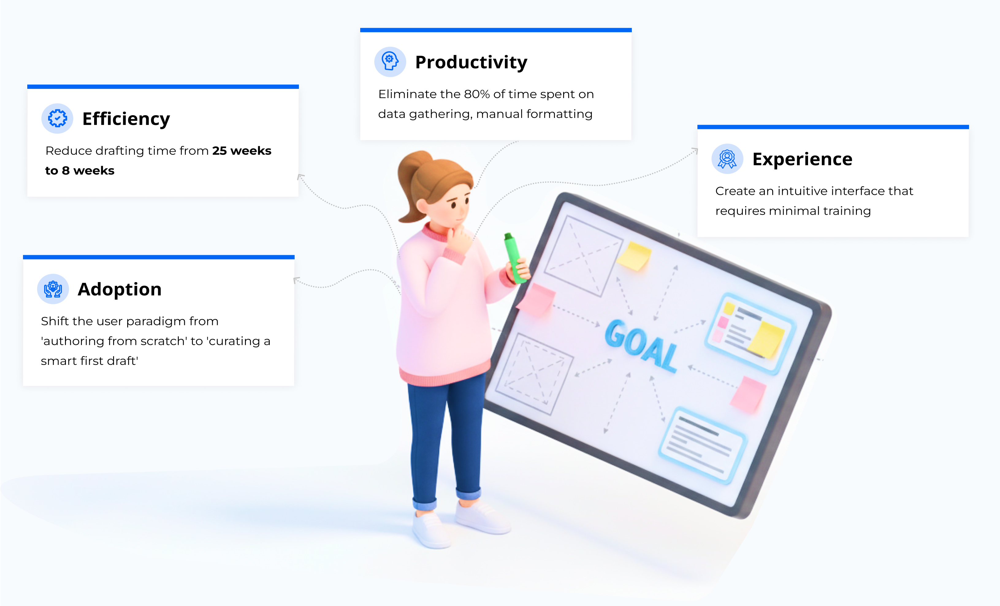
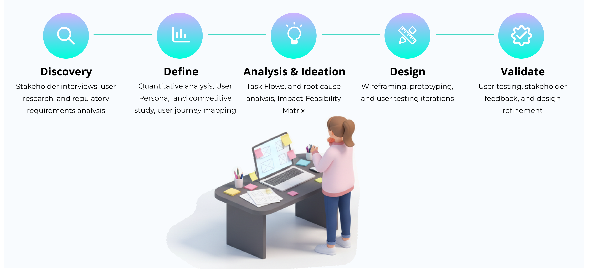
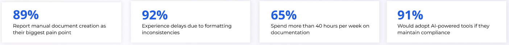
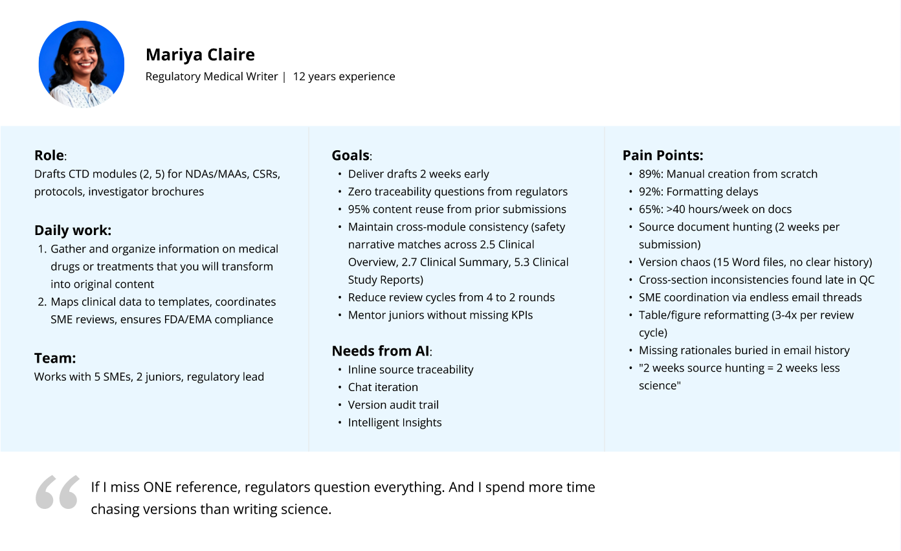
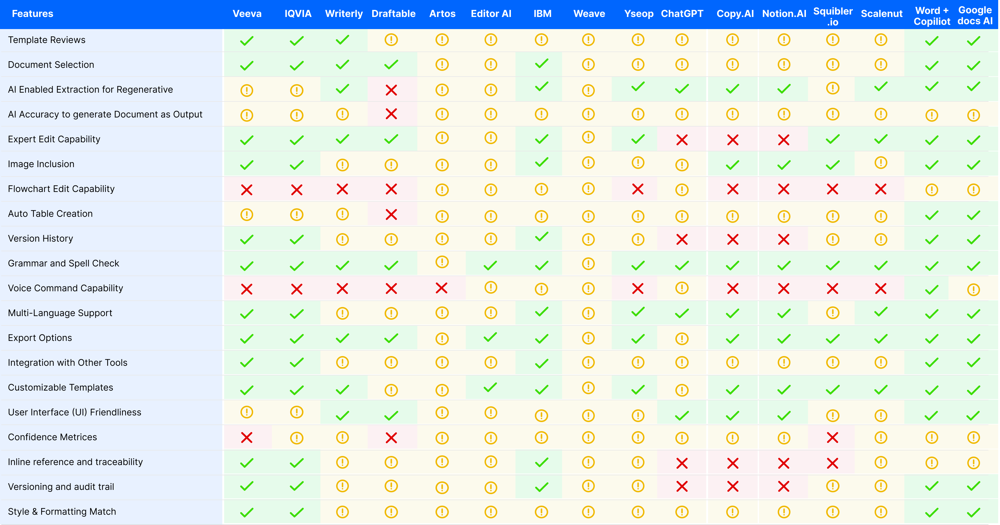
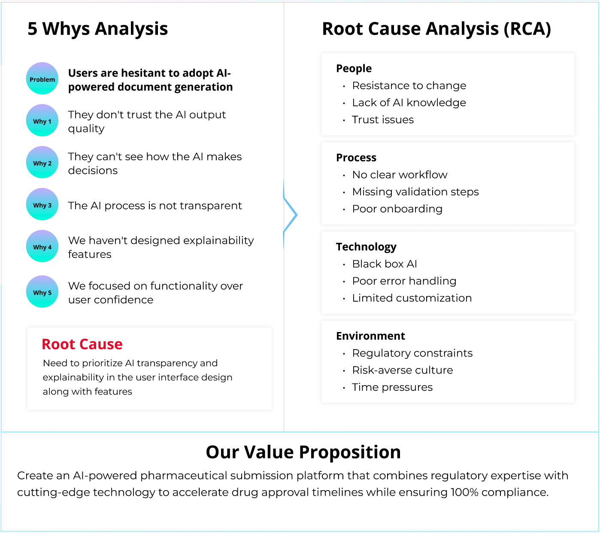
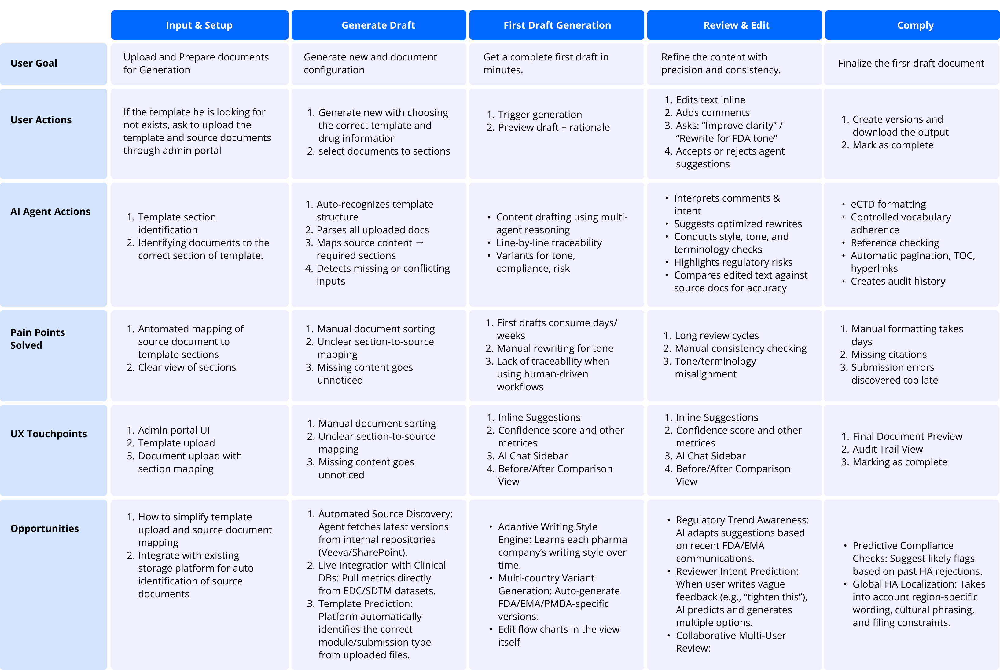
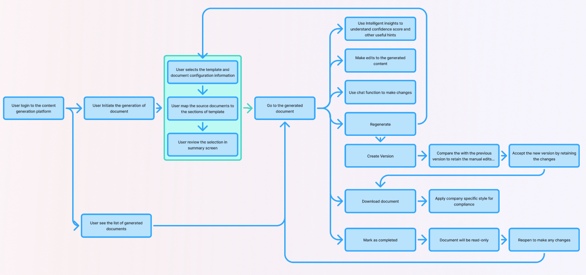

Executive Summary
A deep dive into transforming pharmaceutical regulatory submissions through intelligent automation and user-centered design.
The Challenge
Regulatory teams spent weeks manually creating submission documents, leading to delays, errors, and compliance risks in drug approval processes.
The Solution
An AI-powered platform that auto-generates first drafts of eCTD submission documents using templates, reducing manual effort by 70%.
The Impact
3x faster document creation, improved accuracy, and streamlined collaboration between regulatory affairs and medical writing teams.
Problem Statement
Developing a new pharmaceutical drug is a marathon, requiring over a decade of clinical trials, toxicology reports, and manufacturing testing. The 'Regulatory Submission' is the critical moment where all those years of data must be consolidated into a single, flawless argument for health authorities.
Regulatory submission authoring is typically slow because writers must reconcile scattered data sources, enforce CTD/eCTD (Common Technical Document) structures, and maintain cross‑document consistency while meeting aggressive filing targets. In many organizations, the initial draft alone consumes months, despite the industry's push for single‑digit week submission timelines.
Pharmaceutical companies often spend months preparing these documents, with 80% of that time consumed by manual formatting, data compilation, and compliance checking.
Objectives and Goals
As a Product Designer, I frame my objectives at the intersection of the Business Mandate (Speed) and the User Reality (Safety/Accuracy). For this project, I built the narrative around three core pillars: eliminating "grunt work," establishing trust, and redefining the user's role.
The Business Objective: Speed to Market
The pharmaceutical industry is aggressively moving toward single-digit week submission timelines. However, our internal data showed a stark reality: our drafting process took 16 to 25 weeks. The primary objective was to radically compress this timeline into an 8-week target, thereby accelerating the time to market for life-saving drugs.
The Design Objective: Solving the "80% Problem"
To achieve that speed, I had to identify the bottlenecks. My research revealed that 80% of a medical writer's time was consumed by manual data gathering and formatting. Therefore, my design goal wasn't just "automation"; it was to shift the user's cognitive load from manual data reconciliation to strategic content supervision.
The Strategic Goal: Trust as a Feature
In a regulated environment, trust is not just a benefit—it's an absolute necessity. The rigorous submission process is the pivotal moment where years of data must be consolidated into a flawless argument for health authorities. Establishing trust in the AI's output was paramount.
My Process
Primary Users

User Research: Decoding the Drafting Experience
While we knew the metrics—a drafting process bleeding 16 to 25 weeks—quantitative data couldn't explain why. As the Product Designer, I needed to look beyond spreadsheets and enter the "black box" of the medical writer’s daily reality.
I initiated a mixed-methods research phase. While I surveyed 45 regulatory professionals to establish a quantitative baseline for AI receptivity, the core of my strategy relied on deep, qualitative investigation.
Methodology: Watch, Don't Just Listen
I conducted six in-depth interviews with medical writers, regulatory leads, and quality reviewers. These 60-minute sessions combined open-ended questions with contextual walkthroughs. I asked participants to open their latest submissions and walk me through their real-time workarounds. This allowed me to see the friction points they had become so accustomed to that they no longer thought to complain about them.
Affinity Mapping
Organizing research insights into themes revealed clear patterns in user needs and frustrations.
Workflow Challenges
Manual copy-paste from multiple sources
No single source of truth
Version control is a nightmare
Different formats for different agencies
Time & Efficiency
2-3 weeks per document
80% time on formatting
Rush requests cause errors
Bottleneck at review stage
Collaboration Issues
Siloed team communication
Email overload for reviews
No real-time collaboration
Unclear ownership of sections
Desired Features
Template-based automation
AI-assisted drafting
Integrated review workflow
Compliance checking
Users don't want AI to replace them—they want it to handle the tedious work so they can focus on what matters: scientific accuracy and compliance.
Quantitative Research
(45 regulatory affairs professionals)
Conducted with 45 regulatory affairs professionals, this survey aimed to understand their current experience with submission documentation and their expectations for AI-assisted tools. Responses were anonymous and used to improve internal workflows.
Persona
Analyzing insights from qualitative interviews revealed a distinct pattern: highly educated scientists—capable of complex medical argumentation—were being forced to act as data entry clerks. They spent 80% of their time on manual formatting and data compilation. Their frustration stemmed not from the difficulty of the work, but from its low value relative to their expertise. This insight helped crystallize our primary persona.
Competitor Analysis
We weren't just building a document generator; we were solving a paradox: achieving 8-week timelines without sacrificing regulatory precision. I audited a spectrum of competitors, from industry giants like Veeva, IQVIA, and IBM to specialized tools like Artos and Weave, and general AI platforms like ChatGPT, Copy.ai, and Microsoft Copilot.
My goal was to identify gaps in how these platforms handled the heavy lifting of data compilation versus the nuance of human authorship. Specifically, I looked for patterns in how they managed the user's need for control—a critical requirement identified during our research.
Root Cause Analysis
Customer Journey Mapping
The customer journey map illustrates the collaboration between regulatory writers and the platform, from analyzing existing submissions to exporting a regulator‑ready document. It emphasizes the agentic layer, where the AI proactively recommends templates, suggests source documents, and maintains confidence scores. This transforms a manual, error‑prone process into a supervised, AI‑assisted workflow that keeps writers in full control of compliance and narrative quality.
User Needs: Impact-Feasibility Matrix
The Impact-Feasibility Matrix helped prioritize features by evaluating their potential impact against implementation complexity. We balanced high-value AI capabilities—like inline reference traceability and agentic chat iteration—with regulatory constraints. This ensured focus on features delivering maximum benefit in terms of time savings and trust while managing resource constraints.

User Flow
A streamlined process that keeps users in control while automating the heavy lifting.
Select Template
Choose eCTD module and target health authority
AI Generation
System generates first draft using product data
Review & Edit
User reviews, edits, and refines the content
Compliance Check
Automated validation against regulatory standards
Submit for Review
Route to stakeholders for final approval
Task Flow
Prototype & Design
Low-Fidelity Prototype
The low-fidelity wireframes establish the user journey and core interactions, focusing on the flow from project setup to AI-assisted drafting.
High-Fidelity Prototype
The high-fidelity designs bring the concept to life with realistic submission templates, mapped sources, and a polished interface designed for trust and efficiency.
Landing Page
A unified dashboard providing a comprehensive overview of all regulatory documents, allowing writers to jump back into recent work or generate new content instantly.
- Dashboard: Overview of drafts, generated content, and completed files.
- Document Cards: Displays type, business area, module, and regulatory section.
- Activity Sections: Resume last edited, view AI-generated, or recent files.
- Fast Actions: One-click "Generate" and global search across all documents.
Document Listing Page
A centralized repository to manage and track both individual and team documents. This structured view ensures transparency and simplifies the management of complex projects.
- Categorized View: Browse by project, author, or status.
- Rich Metadata: Title, author, product family, and drug compound.
- Status Tracking: Real-time updates (Draft, Generated, Edit Completed).
- Efficiency: Quick filters and search to locate specific versions.
3-Step Generation
Step 1 - Configuration
The first step in the AI drafting workflow where users define the scope and parameters of the target document to ensure regulatory alignment.
- Parameters: Define document type, output format, and health authority.
- Metadata: Capture product details and specific regulatory modules.
- Compliance: Selection of relevant templates to meet submission standards.
Step 2 - Source Mapping
A critical stage where users upload and map the source documents that will inform the AI’s content generation, ensuring data integrity.
- Source Review: View proposed source files with types and page ranges.
- Interactive Mapping: Add or remove source materials as needed.
- Traceability: Explicit mapping between sources and regulatory sections.
Step 3 - Final Review
The final validation screen provides a complete inventory of the generation setup, establishing trust through full traceability before processing begins.
- Audit Trail: User attribution and version tracking for all sources.
- Lineage: Clear visibility into which files inform which regulatory sections.
- Validation: Final check of document IDs and upload dates.
- Confirm: Save draft configurations or proceed to generate.
Generated Document Interface
A sophisticated editing environment where AI generation meets human expertise, featuring built-in quality controls and assistant tools.
- Structured Viewer: Easy navigation through hierarchical sections.
- Inline Editing: Update text and data tables while preserving formatting.
- AI Insights: Quality checks for structure, compliance, and accuracy.
- AI Assistant: Chat-based support for refining content and compliance.
Inline Reference Panel
Enhancing trust by showing the exact source data used for each piece of generated content. This side-by-side view allows for rapid verification of AI output.
- Source Chunks: Displays relevant text snippets alongside the draft.
- Direct Links: Jump into original source documents for deep review.
- Traceability: Zero-effort verification of technical and medical claims.
Usability Testing
The goal of usability testing was to validate whether regulatory writers could comfortably work with the AI co‑pilot throughout the drafting workflow without sacrificing control. We focused on learnability, transparency, and task efficiency.
Participants and Setup
- 6 participants across roles: Senior Medical Writers, Regulatory Affairs Leads, and Quality/CMC Reviewers.
- 5–15 years of experience in regulatory submissions.
- 60–90 minute moderated sessions conducted remotely.
- Scenario-based scripts using realistic templates and sample AI outputs to ensure domain relevance.
Results & Outcomes
The platform delivered significant efficiency gains while maintaining the highest regulatory standards.
From 25 weeks down to 8 weeks
Automated first-draft generation
Adherence to regulatory standards
Precise AI extraction from sources
"This tool has fundamentally changed how we approach regulatory submissions. What used to take months of manual effort is now accomplished in weeks, allowing our team to focus on critical scientific analysis rather than document formatting."
Future Roadmap & Key Learnings
Future Roadmap
Extended Agent Capabilities
Moving beyond drafting to automated pre‑submission readiness checks, scanning for missing justifications or region‑specific requirements.
Deep System Integration
Connecting clinical data repositories and document management tools to create a single source of truth for all project stakeholders.
Stakeholder Dashboards
Role‑based views for leads and reviewers to monitor risk areas and submission readiness at a glance through intuitive data visualization.
Onboarding & Education
Tailored "Safe AI" education to help teams effectively supervise the agent and understand the nuances of AI-assisted medical writing.
Key Learnings
Design for Trust
For expert users, control and traceability are more valuable than pure speed. Speed is only beneficial when the output is trusted and verified.
AI as Collaborator
The biggest shift was moving writers from "authoring from scratch" to "curating and supervising" a smart draft, redefining their cognitive role.
Micro-Interactions Matter
Details like visible mapping status and clear version history had a greater impact on trust than "flashy" AI features or complex dashboards.
Domain Context is Critical
Testing with real regulatory users surfaced non-obvious risks, leading to essential guardrails and UI language that felt safe for real submissions.